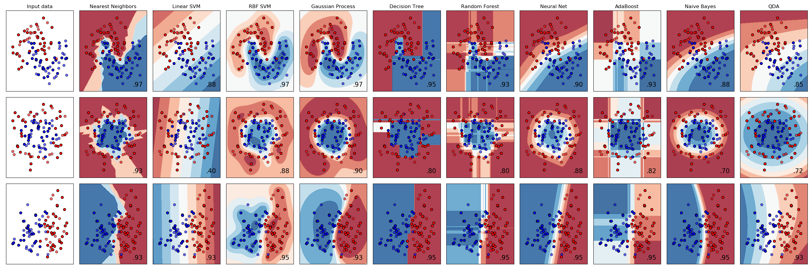

Analytics
Not a course in Machine Learning
John Alexis Guerra Gómez| ja.guerrag[at]uniandes.edu.co| @duto_guerra
Jose Tiberio Hernández | jhernand[at]uniandes.edu.co
Universidad de los Andes
http://johnguerra.co/lectures/visualAnalytics_fall2019/14_Analytics/
Outline
- Clustering
- Regression
- Classification
- Dimensionality Reduction
- Recommendation systems
Clustering

http://scikit-learn.org/stable/modules/clustering.html#clustering
When to use it?
- When you want to find similar items
- Depends on your distance metric
- When you have to many items, and you want to aggregate
Examples
- Customer segmentation
- Grouping experiment outcomes
Regression

http://scikit-learn.org/stable/modules/linear_model.html#passive-aggressive-algorithms
When to use it?
- Present (Identify/Compare) Tendency
- Predict values
Linear Regression
http://blockbuilder.org/tmcw/3931800by tmcwExamples
- Stock prices
- Drug response
Classification
https://scikit-learn.org/stable/modules/ensemble.html#random-forestsWhen to use it?
- Present (Identify/Compare) Tendency
- Present (Identify/Compare) Groups
- Aggregate
- Predict values
Examples
- Photo categorization
- Sentiment analysis
- Spam filtering
Dimensionality Reduction

When to use it?
- Attribute Filtering
- Categorize Documents (Topic modeling)
Recommendation systems
When to use it?
- Large catalog, with user preference history
- If you like a, and b, maybe you will like c
Types
- Collaborative filtering
- Content based systems
- Hybrids
Examples
- Amazon
- Yahoo
- Netflix Prize